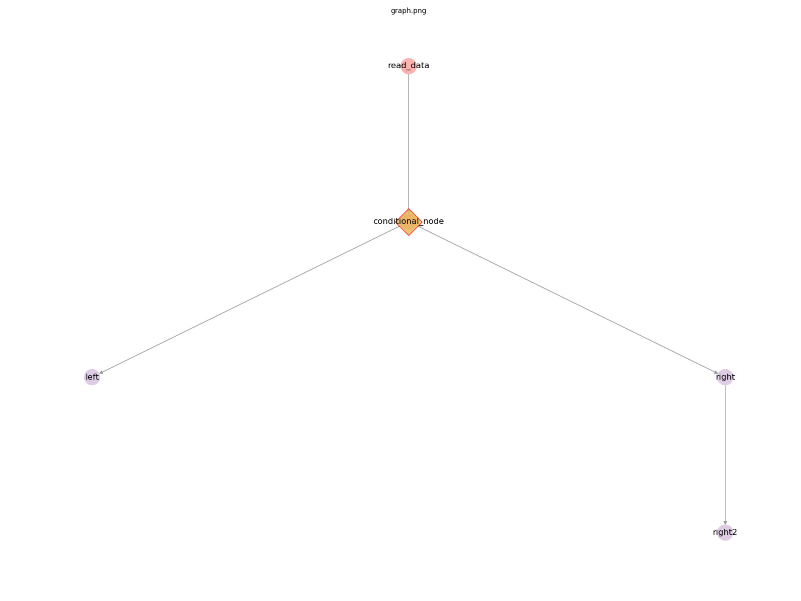

Developer Notes¶
primrose has been developed with a relatively small, simple, and consistent interface with which to develop your own DAG nodes.
The core concept is that of a Node, a single node of a DAG. This is defined with the abstract class primrose.base.AbstractNode.
Some example custom nodes can be seen in the default project directory that’s created when running primrose create-project: AwesomeReader and AwesomeModel.
There are two defined methods:
necessary_config(node_config)¶
Almost all nodes will need some parameterization. A reader needs to from where to read, a model needs to know whether it running in training or eval mode, a writer needs to know where to write and so on.
One of the goals of the primrose framework is to catch configuration errors as early as possible, before the job actually starts. For this reason, we have implemented many configuration checks within the Configuration class (detailed here). One of those checks is to check that the nodes have all the information that they need to run. For this reason, we include a necessary_config(node_config) method in the Node interface.
If a CsvReader needs to know a filename so that it can perform its task, we explictly tell the Configuration object to look for a filename key in the section of configuration that defines that node.
To be explicit, if CsvReader returns set(['filename']) from CsvReader.necessary_config() then if the configuration file has
"read_data": {
"class": "CsvReader",
"filename": "data/tennis.csv",
"destinations": [
"encode_and_split"
]
}
Configuration knows that this is a “good” configuration and it passes its check.
All the parameters, i.e.
{
"class": "CsvReader",
"filename": "data/tennis.csv",
"destinations": [
"encode_and_split"
]
}
is avaliable to the Node class via self.node_config.
run(data_object)¶
The other method in AbstractNode is run(data_object). This is the method that implements a node’s functionality. It receives the data_object which is an instance of DataObject, and so has access to all the data from upstream nodes of the DAG. It performs it function, and can (but doesn’t have to) add or otherwise modify the data within DataObject and returns it.
The full interface for run(data_object) is
"""
run the node. For a reader, that means read, for a writer that means write etc.
Args:
data_object (DataObject): DataObject instance
Returns:
(tuple): tuple containing:
data_object (DataObject): instance of DataObject
terminate (bool): terminate the DAG?
"""
and so it returns not only the data_object but also a flag to tell the DagRunner whether it should terminate the whole DAG. For instance, suppose that at the start of DAG, a reader is suppposed to read some data but the dataset it receives is empty. There may be no point doing any of the downstream nodes and so it can flag to stop the whole job by returning terminate=True
Complete example: sleep¶
Let’s suppose that you wanted to develop a new node whose job was to sleep for 5 seconds. We’ll parameterize and externalize the duration as a key in the config.
Your class (ignoring pydocs here for clarity) would look like:
from primrose.base.node import AbstractNode
import time
class SleepNode(AbstractNode):
@staticmethod
def necessary_config(node_config):
return set(['duration'])
def run(self, data_object):
time.sleep(self.node_config['duration'])
terminate = False
return data_object, terminate
and that’s it. The primrose framework takes care of the rest. For better code, you might want to add some checks that duration is numeric, that the duration value is non-negative and so on but you get the idea.
After registering your class (see next section), you can then use it in a configuration files such as as
"sleeptime": {
"class": "SleepNode",
"duration": 4.5,
"destinations": [
"some_other_node"
]
}
Registering Your Classes¶
Now that you’ve written your own classes that implement the Node interface, how do you register them given that these nodes are in your project and you are importing primrose?
If running primrose with a configuration file, all you need to do is set the environment variable PRIMROSE_EXT_NODE_PACKAGE.
When configuration is validated, there is a check to make sure that all classes implement AbstractNode. If a class is not already registered, there is an attempt to register by searching through the given PRIMROSE_EXT_NODE_PACKAGE for the class name. If there is a match, the class is automatically imported and registered. The variable PRIMROSE_EXT_NODE_PACKAGE can be set to a package installed in pip (e.g. my_nodes), a python file (e.g. src/my_nodes/node1.py), or a directory to a package (e.g. src/my_nodes). If you would rather specify the package in your configuration file, you can set the key class_package in the metadata section. If both values are set, PRIMROSE_EXT_NODE_PACKAGE will take precedence.
If you want to specify a specific prefix for a class, you can set the value class_prefix in your node config. This class prefix will be appended to the set PRIMROSE_EXT_NODE_PACKAGE. This can either be specified in python dot notation (e.g. src.mynodes) or a path src/mynodes.py. This could be useful if you are importing nodes from multiple packages or from multiple locations.
Here is an example of how your configuration may look if your nodes are in the path src/mynodes/awesome_node.py. In the first method, you can just specify PRIMROSE_EXT_NODE_PACKAGE=src and primrose will find your custom node:
implementation_config: {
...
read_data: {
"class": "MyAwesomeNode",
"destinations": [
"encode_and_split"
]
}
...
}
Alternatively, you can set the class_package and/or class_prefix variables to explicitly define a class location:
metadata: {
class_package: "src"
},
implementation_config: {
...
read_data: {
"class": "MyAwesomeNode",
"class_prefix": "mynodes/awesome_node.py",
"destinations": [
"encode_and_split"
]
}
...
}
Conditional Pathing¶
During machine learning jobs, one often has to make decisions dynamically depending on characteristics of the data at runtime: if there is drift, then retrain the model; if the data is too large to fit in RAM, handle in the cloud; if the detected language is French, use the French model etc.
One option is to bake this conditional logic within a node. However, another option supported in primrose is to have conditional paths in the DAG. That is, if some condition is met at a given node, the DAGRunner should follow one or more of the destinations (and their subgraphs) and should ignore one or more other destinations (and their subgraphs). This is more easily explained with a diagram.

In this simple DAG, the reader flows into a node called conditional_node. This flows into two destinations: left and right. This conditional_node could flow into both left and right, as normal and as would be expected. However, in this case, it could signal to the DAGRunner that only the left path should run and the right path (right and right2) should be dropped from the DAG. It could also signal that only the right path should run and the left path should be dropped.
How does one develop such nodes? One of the primrose.base node types is AbstractConditionalPath. These nodes extend AbstractNode and so they must implement run(self, data_object). However, they must also implement a method destinations_to_prune(self). If the node does not want to prune a path, it returns None. However, if it does want to prune a path it returns a list of one or more of its destinations nodes. In the example above, it could return ['left'], ['right'] or ['left','right'].
For any AbstractConditionalPath-type node, the DAGRunner will call the node’s destinations_to_prune() after run(self, data_object). Thus, it has access to the data_object and any processing during the run method with which to make the pruning decision.
Note: as these decisions are made dynamically at run time, the DRY_RUN feature of primrose is not able to demonstrate the precise final DAG that will be run. DRY_RUN has to assume that no DAG pruning will occur.
Next¶
Learn more about DataObject: DataObject.